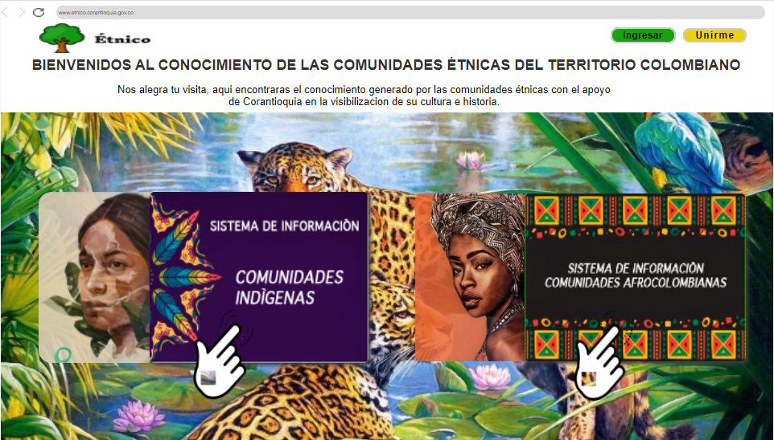

PLAN DE TRABAJO.
Este ejercicio permitirá mediante un estudio de mercado estimar los esfuerzos,recursos y tiempos necesarios para llevar a feliz término la solución tecnológica. Para ello la Corporación solicitará cotizaciones a universidades y/o empresas con experiencia certificada en desarrollo de software.
-
Metodología para el Levantamiento de Información
Se construye formato para el levantamiento de requerimientos junto a la Subdirección de Participación.
-
Reunión
Orientación a las subdirecciones sobre la Metodología y resultados esperados.
¿comó diligenciar el formato?
¿comó entregar el formato, ya diligenciado?
-
Formato Levantamiento de requerimientos
En este informe se especifican los requisitos funcionales y no funcionales determinados por la necesidad del proyecto.
verAnálisis
Se consolida los aportes de las subdirecciones en el documento de levantamiento de requerimientos. -
Metodología Inclusiva
Subdirección de Participación y Cultura con el apoyo de la Subdirección de Planeación.
-
COMUNIDADES ÉTNICAS
Actividad individual. Actividad grupal.
-
Formato Levantamiento de requerimientos
En este informe se especifican los requisitos funcionales y no funcionales determinados por la necesidad del proyecto.
verAnálisis
Se consolida los aportes de la comunidad y subdirecciones he integrarlos en el documento de levantamiento de requerimientos. -

-
Prototipado
Proceso de plasmar los requisitos funcionales y no funcionales gráficamente.
Retroalimentación
Ajustes en el prototipo por parte de la Subdirección de Participacion y Cultura -
Invitados:
Subdirección Administrativa y financiera.
Subdirección de Participacion y Cultura.
-
Reunión presencial 2022-03-15
☘️ agrupar con retos del PEGAR
☘️ agregar indicadores del PA y su seguimiento
☘️ agrupar detalle de fichas de una comunidad
☘️terminología por comunidad
-
☘️ información individual por comunidad
☘️mensaje cuando se accede algo que no puede, decirle que tramitar autorización
☘️permitir ver el contenido pero solicitar permiso si lo requiere al responsable del dato
☘️ajustar el campo territorial en registro
☘️cambiar la palabra registro por algo más amigable
-
Miembro de una comunidad y visitante.
-
☘️Prototipo.
☘️Formato de levantamiento de requerimientos de software.
☘️Documento con requisitos por aclarar con las comunidades.
☘️Sugerencias: Perfiles del equipo desarrollador y stack de tecnologÌas.
-
¿Qué sigue?
1. Estudios previos.
2. Levantamiento de información primaria.
3. Análisis de sistemas para interoperar.
4. Socialización de los resultados con las dependencias de la Corporación y las comunidades étnicas.